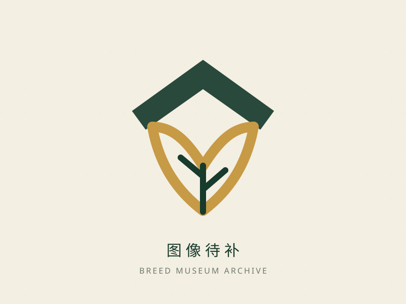

687 → 701
新增 23 条候选并完成重复归一，净增 14 条。
Before → After
一次可量化的质量跃迁
不只增加数据，而是同步解决重复记录、品牌割裂、无后端白屏、移动端拥挤、缺少测试与文档漂移等结构性问题。
畜禽范围全覆盖
明确区分馆藏总量与权威名录口径。
ID 与规范中文名全局唯一
范围、枚举、来源与名录匹配自动检查。
28 个文件 · Vitest 79 项通过
Playwright 24 用例中 23 通过、1 按桌面条件跳过、0 失败。
gzip：754 KB → 39.9 KB
路由懒加载并拆分 PDF、图表与 AI 重依赖。
公开主路由可用
AI 页面显示清晰的“服务未配置”状态。
统一替换临时与模板图标
印章、字标、favicon 与图片占位图。
无已知漏洞
通过 npm 官方审计端点复核。
Data Boundary
先把“701”与“271”说清楚
701 条是站内运行时馆藏总量，不等于 701 个国家级保护品种；271 条是第 940 号公告畜禽范围内的名称匹配数。数据版本为 2026-09-27，本次审计日期为 2026-10-02。
- 馆藏同时包含国家级名录匹配、地方整理记录和待进一步核验记录。
- 新增记录没有可复用图片时使用原创 SVG 占位图，不虚构摄影者、许可证或版权状态。
- 五项雷达值属于站内编辑性展示指标，不代表官方遗传评估或生产性能结论。
298农业农村部第 940 号公告
国家级畜禽遗传资源保护名录
国家级畜禽遗传资源保护名录
271畜禽 · 本轮完整匹配
12蜂 · 暂未纳入
15蚕 · 暂未纳入
蜂与蚕的指标模型不适配当前五维畜禽雷达模型。此次明确排除，待建立专属属性模型后再纳入，避免“为追求数量而制造错误”。
40 Audit Angles
从五个维度拆解项目不足
选择分类筛选，点击卡片查看“原有不足—本轮改进—剩余风险”的完整链路。打印时将自动展开全部内容。
01产品定位产品与功能
原有不足
功能说明仍混有已移除的登录、收藏能力。
本轮改进
README、PRD、网站说明书统一为公开科普站定位。
剩余风险
后续新增账户功能时需重新做隐私与权限设计。
02范围边界产品与功能
原有不足
站内馆藏数与国家级名录数容易混淆，展示集合可能被误读为权威全集。
本轮改进
页面、手册、README 与数据源区分“站内馆藏 701”与“第 940 号公告畜禽匹配 271”。
剩余风险
面向公众仍需持续强化口径说明，并在新增名录类别时更新边界。
03数据覆盖数据与内容
原有不足
权威名录存在缺项。
本轮改进
新增 23 个经核对候选记录，净馆藏增至 701。
剩余风险
蜂、蚕待建立新指标模型后再纳入。
04数据唯一性数据与内容
原有不足
11 组重复 ID 可能造成 React key 冲突和详情错配。
本轮改进
归一化 ID、中文名与兼容入口，自动审计唯一性。
剩余风险
分享链接的旧 ID 映射需长期保留。
05规范名称数据与内容
原有不足
简称、旧称和规范名混用。
本轮改进
增加 officialName、aliases 与规范搜索。
剩余风险
少数地方俗名仍需逐条文献核对。
06数据来源数据与内容
原有不足
记录来源分散，用户无法判断可信度。
本轮改进
建立来源目录、核对日期、保护状态和详情来源区块。
剩余风险
历史 600+ 条叙述仍需逐条补充来源。
07数据验证数据与内容
原有不足
缺少坐标、枚举、雷达值和来源自动检查。
本轮改进
breedAudit 覆盖唯一性、范围、枚举、来源和名录匹配。
剩余风险
应在新增数据流程中强制执行审计。
08分类体系数据与内容
原有不足
类别统计依赖手写数字，容易漂移。
本轮改进
运行时计算 11 类统计并同步文档。
剩余风险
“其他”类仍较宽，未来可细分鹿、鸽等二级类。
09地理数据数据与内容
原有不足
地图点位容易被误解为精确分布边界。
本轮改进
页面增加“示意主要产区”说明。
剩余风险
需要更权威的县级或保护场数据才能提高精度。
10濒危标签边界数据与内容
原有不足
原有等级可能被误认为官方结论，且与第 940 号公告混用。
本轮改进
增加“待核验”状态、编辑性免责声明，并将名录成员与濒危标签分开统计。
剩余风险
历史等级应逐条与权威调查报告复核；未完成前不得对外宣称保护等级。
11图片完整性数据与内容
原有不足
外链失败后卡片留白，来源和版权不清。
本轮改进
统一 BreedImage 容错与原创 breed-placeholder.svg。
剩余风险
外链稳定性与可复用权利仍是长期风险。
12搜索与 URL 状态数据与内容
原有不足
只搜索当前名称，旧称难以命中；刷新或分享后筛选状态丢失。
本轮改进
规范名、别名、英文名参与搜索；百科 search/province/category/endangered 与对比 compare 参数可恢复、规范化并支持前进/后退。
剩余风险
可继续加入拼音首字母、模糊纠错和分享状态摘要。
13功能正确性产品与功能
原有不足
缺少回归测试，重复 ID 会打开错误详情。
本轮改进
搜索、详情、对比、数据源与 URL 状态均有单元/组件测试；E2E 已覆盖别名与对比流程并通过。
剩余风险
AI 外部服务仍依赖供应商可用性。
14无后端降级产品与功能
原有不足
Supabase 缺失时静态页面可能白屏。
本轮改进
后端配置改为可选，公开路由无配置可运行。
剩余风险
未来恢复账户功能时，需要明确功能级依赖边界。
15路由与 404产品与功能
原有不足
未知地址静默回首页。
本轮改进
增加真实 404 页面并保留错误 URL。
剩余风险
Hash 路由对传统 SEO 仍有限制。
16信息架构产品与功能
原有不足
桌面功能丰富但移动导航拥挤。
本轮改进
桌面导航与移动抽屉分离，六个目的地完整可达。
剩余风险
未来增加栏目时需避免菜单继续膨胀。
17首页体验产品与功能
原有不足
视觉强，但搜索和行动路径不够统一。
本轮改进
品牌、搜索、地图背景与主行动统一。
剩余风险
首屏仍需加载共享数据，弱网体验可继续优化。
18百科体验产品与功能
原有不足
筛选密集，移动端控制项容易挤压。
本轮改进
侧栏与筛选抽屉、44px 触控目标、虚拟列表和图片占位。
剩余风险
可增加筛选条件摘要和一键清除反馈。
19地图体验与完整列表产品与功能
原有不足
移动端地图和详情面板相互争夺空间，点位/省份主要依赖鼠标，长列表被截断。
本轮改进
390px 下独立筛选入口、可触控点位与响应式详情；地图省份与点位支持键盘/ARIA，品种列表提供“显示全部/收起”并随筛选重置。
剩余风险
小屏地图仍适合探索而非精确空间分析；需继续验证超长名称和高密度点位。
20数据看板产品与功能
原有不足
图表对键盘与读屏用户不友好。
本轮改进
增加可读表格摘要、CSV/PNG 导出与清晰标题。
剩余风险
PNG 导出依赖浏览器 SVG 支持，失败时回退 CSV。
21对比功能产品与功能
原有不足
选择状态和信息密度缺少小屏约束。
本轮改进
加入响应式对比卡和空状态提示。
剩余风险
可进一步加入差异高亮和分享参数。
22AI 功能产品与功能
原有不足
未配置时错误不清楚，媒体操作可能暴露失败细节。
本轮改进
明确“服务未配置”状态，公开站功能不受影响。
剩余风险
上传内容受第三方条款与保留策略影响，应补充隐私说明。
23视觉品牌视觉与可达性
原有不足
临时单字标和 TailAdmin 遗留资产不统一。
本轮改进
原创馆藏印章、横版字标、favicon 与图片占位四套 SVG。
剩余风险
SVG 中文文字依赖系统字体，极端环境可能存在字形差异。
24深色模式视觉与可达性
原有不足
局部组件颜色与主题不一致。
本轮改进
统一墨绿、宣纸、金色 token，并测试深色主题。
剩余风险
仍应定期做对比度自动扫描。
25移动端视觉与可达性
原有不足
顶栏截断、触控目标偏小，页面可能横向溢出。
本轮改进
390×844 E2E、44px 控件、移动菜单和筛选抽屉。
剩余风险
超窄设备与横屏尚未单独设项目。
26无障碍与 reduced-motion视觉与可达性
原有不足
H1、跳转主内容、焦点、地图键盘操作和动态图偏好不完整。
本轮改进
语义标题、ARIA、状态播报、键盘关闭、地图省份/点位 Enter/Space、百科完整列表，以及 prefers-reduced-motion 下的动画降级。
剩余风险
未接入 axe 等规则集，建议后续加入自动扫描并覆盖高对比度/系统字体场景。
27性能与包体工程质量
原有不足
AI、PDF、图表和数据随首屏进入，主包过大。
本轮改进
路由懒加载、重依赖异步块；入口 116,915 B（gzip 39,910 B），静态依赖图 417,659 B（gzip 139,686 B），均通过预算。
剩余风险
breeds 异步块 602.66 KB（gzip 150.49 KB）仍触发 Vite 500 KB 提示，可按分类或搜索时机进一步拆分。
28可靠性工程质量
原有不足
图片失败、渲染异常、离线状态缺乏恢复路径。
本轮改进
图片回退、错误边界、重试/回首页及非阻塞离线提示。
剩余风险
外部图片和 AI 服务仍可能高延迟。
29错误处理工程质量
原有不足
生产界面可能泄露异常文本。
本轮改进
用户界面使用安全文案，开发环境保留诊断。
剩余风险
个别媒体工具仍使用控制台错误，需避免记录敏感载荷。
30安全配置安全与治理
原有不足
真实生产环境文件被版本控制，客户端初始化过早。
本轮改进
删除跟踪的 .env.production，仅保留空值 .env.example，按需创建客户端。
剩余风险
已进入历史的配置需在维护窗口评估轮换与历史清理。
31依赖供应链安全与治理
原有不足
缺少安全审计记录，镜像源不支持 audit API。
本轮改进
使用 npm 官方审计端点检查生产依赖，当前无已知漏洞。
剩余风险
多个依赖存在大版本更新，不应无验证批量升级。
32隐私安全与治理
原有不足
AI 图片、语音或文本流向不透明。
本轮改进
静态功能与 AI 服务解耦，未配置时不发送请求。
剩余风险
上线 AI 前应补充供应商、用途、保留期和删除方式。
33SEO安全与治理
原有不足
标题和描述未实际接入，404 语义不正确。
本轮改进
各主路由接入标题、描述和规范 404。
剩余风险
CSR + Hash 路由限制爬虫深层索引，长期可考虑预渲染。
34国际化安全与治理
原有不足
中英文切换存在，但部分错误文案硬编码。
本轮改进
全局设置和主要导航统一，保留中文内容主体。
剩余风险
数据正文尚非双语，完整国际化成本较高。
35可维护性工程质量
原有不足
数据散落在 15 个增量文件，AI 页面超过千行。
本轮改进
数据审计和元数据层降低修改风险，AI 未配置状态已拆组件。
剩余风险
下一阶段应拆分 AI 的识图、语音、对话与导出模块。
36测试与发布门禁工程质量
原有不足
零测试，回归依赖人工浏览。
本轮改进
28 个测试文件、79 项 Vitest 测试通过；Playwright 桌面/390px 双视口共 24 用例，23 项通过、1 项按桌面条件跳过、0 项失败；双视口 E2E 已纳入 GitHub Actions。
剩余风险
仍需加入覆盖率趋势和无障碍扫描。
37构建工程质量
原有不足
ESM 配置警告，重依赖难定位。
本轮改进
Vite 配置修正，manifest 和包体预算脚本落地。
剩余风险
Vite 仍提示单个数据块超过 500 KB。
38GitHub Pages 部署工程质量
原有不足
缺少无配置构建验证，审计报告和静态附加页容易漏发布。
本轮改进
build:e2e 使用独立模式；prepare-pages 强制检查 /audit/、四个 SVG、.nojekyll、manifest 引用，GitHub Pages 使用 gh-pages 与 HashRouter。
剩余风险
仍需在 CI 中验证实际 deployment SHA、首页/审计页/隐私页 HTTP 200，并明确缓存失效策略。
39文档安全与治理
原有不足
README、说明书、数据手册的数字和功能描述漂移。
本轮改进
docs:sync 从运行时数据生成统一统计，Markdown 为源。
剩余风险
PDF 需在 Markdown 更新后重新生成并纳入发布门禁。
40CI 与运维流程安全与治理
原有不足
缺少一条可复现的发布检查命令，失败时容易误报“已发布”。
本轮改进
check / check:all 串联类型、lint、Vitest、数据/文档审计、Pages 构建、预算和 E2E；GitHub Actions 增加生产依赖审计、文档一致性和桌面/移动 E2E。
剩余风险
需补充状态徽章、覆盖率趋势和失败重试策略。
Implemented
已经落地，而非停留在建议
本轮改动覆盖数据底座、品牌体验、工程质量和安全治理四条主线；静态检查、构建和 Playwright 证据均已更新。
数据与内容
- 扩充并归一为 701 条唯一馆藏记录
- 完整匹配 271 个国家级保护名录畜禽名称
- 加入规范名、别名、来源、保护状态和核对日期
- 建立数据审计与文档同步工具
品牌与体验
- 新增馆藏印章、横版字标、favicon、图片占位图
- 替换临时文字标识和旧模板品牌资产
- 重构移动导航、筛选、地图和 44px 触控目标
- 补齐 404、离线、错误边界和图片回退状态
工程质量
- 路由懒加载并拆分 PDF、图表和 AI 重依赖
- 新增 Vitest、Testing Library 与 Playwright 双视口测试
- 加入包体预算、构建清单与一键发布前检查
- 重生成网站说明书与品种数据手册 PDF
安全与治理
- 后端配置改为可选，静态公开路由独立可用
- 停止跟踪真实生产环境文件，保留空值示例
- 生产依赖通过 npm 官方端点安全审计
- 明确数据口径、编辑性指标和图片版权边界
Original SVG System
项目图标已统一为原创 SVG
所有资产均为矢量文件，可在高分屏、浏览器标签、导航栏和图片加载失败场景中保持清晰。

Residual Roadmap
剩余问题与优先级
当前没有阻断上线的问题；剩余事项主要涉及隐私、历史图片授权、持续性能优化与长期数据模型扩展。
阻断上线
当前无阻断项
类型、数据、文档、构建、包体和 Playwright 检查均有通过记录。
上线前确认
- 为 AI 图片、语音和文本处理补齐正式隐私说明
- 逐条复核历史图片授权与可复用权利
- 评估历史环境凭据轮换和 Git 历史清理
下一迭代
- 继续拆分约 602.66 KB（gzip 150.49 KB）的 breeds 数据块
- 拆分千行级 AI 页面模块
- 接入 axe / Lighthouse CI 与覆盖率趋势
- 为历史记录逐条补齐叙述与图片来源
长期建议
- 为蜂、蚕设计独立属性模型后纳入馆藏
- 评估预渲染或静态生成，改善深层 SEO
- 引入更精细空间数据、拼音搜索与差异高亮
Verification Evidence
每个结论都有可复现证据
以下结果均于 2026-10-02 在 Windows / Chromium 环境重新执行（数据版本为 2026-09-27），不使用提高阈值等方式掩盖现存警告。
| 命令 / 检查 | 结果 |
|---|---|
pnpm.cmd typecheck | 通过 |
pnpm.cmd lint | 通过 |
pnpm.cmd test -- --reporter=dot | 28 个文件，79 项测试通过 |
pnpm.cmd docs:check | 701 条、701 唯一 ID、0 问题、无文档漂移 |
pnpm.cmd check:all --all | TypeScript、Biome、Vitest（28 个文件 / 79 项）、Pages 测试（2/2）、数据/文档（701 条、0 问题）、生产构建、预算和 E2E 全部通过；Playwright 24 个用例：23 通过、1 按桌面条件跳过、0 失败 |
pnpm.cmd build:pages | 生产构建与 Pages 附加文件准备通过，audit、brand、.nojekyll、privacy、robots、sitemap 和 manifest 均已纳入 |
pnpm.cmd audit --prod --registry=https://registry.npmjs.org | 无已知生产依赖漏洞 |
| Playwright 桌面 + 390px（E2E_PORT=46218） | 24 个用例：23 通过、1 条件跳过、0 失败 |
Backup & Rollback
修改前版本已完成双重备份并验证
本轮修改前已在 round3 目录保存 ZIP、TAR、工作树补丁与 SHA-256 清单；此前 round2 的源码 ZIP、Git bundle 与清单也保留，可恢复未提交工作状态或完整 Git 分支历史。
D:\Programming\Objects\BreedMuseum-backups\BreedMuseum-round3-pre-20261002-151610\BreedMuseum-quality-upgrade-current.zip
D:\Programming\Objects\BreedMuseum-backups\BreedMuseum-round3-pre-20261002-151610\BreedMuseum-quality-upgrade-current.tar
D:\Programming\Objects\BreedMuseum-backups\BreedMuseum-round3-pre-20261002-151610\checksums.sha256
D:\Programming\Objects\BreedMuseum-backups\BreedMuseum-round3-pre-20261002-151610\working-tree.patch